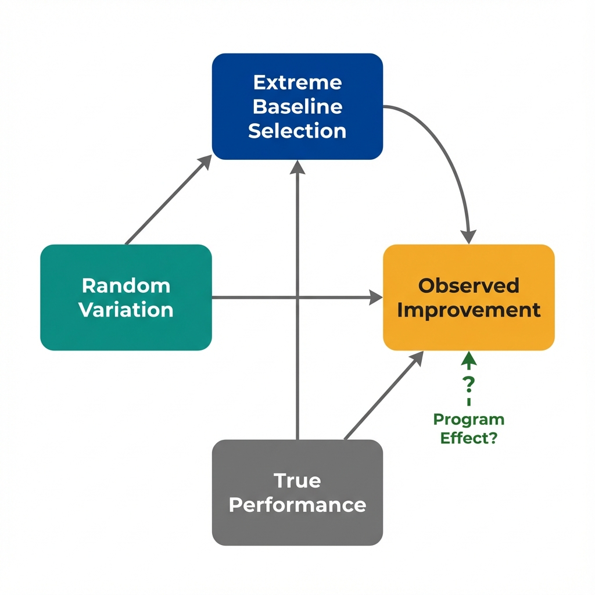

The Data
Health officials identified the 10 clinics with the highest emergency department visit rates in 2019 and launched a quality improvement program. By 2021, their rates dropped dramatically. The program appears successful. But what happened to equally poor-performing clinics that received no intervention? (Data are simulated for illustration.)
ED Visits per 1,000 Before and After Program
Next: Both groups improved by about the same amount. Why would clinics that received no intervention show the same improvement as those in the program?
The Problem
When you select the most extreme cases for intervention, they will likely improve whether you do anything or not. This is a mathematical certainty, not evidence of program effectiveness.
What Is Regression to the Mean?
Any measurement has two components: true performance and random variation (luck, timing, measurement error, seasonal factors).
When you select the worst performers, you're selecting groups where bad luck made them look worse than their true average. On the next measurement, their luck is likely to be more typical, so they appear to improve.
The same logic applies to the best performers: They'll likely look worse on the next measurement, even without any negative intervention.

Extreme values naturally drift toward average due to random variation in measurements.
A Simple Analogy
Imagine flipping coins and selecting people who got 8 or more heads out of 10 flips. If they flip again, most will get closer to 5 heads. This happens because extreme results are rare and unlikely to repeat, not because anything changed about their coin-flipping ability.
What This Means for Program Evaluation
No amount of statistical adjustment can fix a flawed comparison. When you select extreme performers for intervention, any observed improvement conflates true program effects with regression to the mean.
Without a comparison group of equally extreme non-participants, you cannot separate regression from real program effects. This is what economists mean by "identification."
Next: If regression to the mean is unavoidable when selecting extreme cases, how can we design studies that still allow us to identify real program effects?
Design Solutions
Regression to the mean is a selection problem, not a data analysis problem. The solution lies in study design, not statistical adjustment after the fact.
Three Approaches to Handle Regression Effects
Randomized Assignment
From the pool of worst performers, randomly assign half to the program and half to a control group. Both groups will regress toward the mean, so any difference reflects the true program effect.
Matched Comparison
Identify clinics with similar extreme baseline values but that did not receive the intervention. Compare their trajectories. Both groups experience regression, isolating the program's added value.
Regression Discontinuity
If the program uses a sharp eligibility cutoff (e.g., "worst 10%"), compare clinics just above and just below that threshold. Similar clinics, different treatment status.
The Economist's Perspective
These design solutions all work by finding a valid comparison. The comparison group must experience the same regression effects as the treatment group but not receive the intervention. When this condition holds, the difference between groups reflects the true causal effect.
Next: What questions should we ask when evaluating a program that targeted extreme performers?
Questions to Consider
These questions help identify regression-to-the-mean threats that statistical adjustment cannot fix. They won't prove causation, but they'll reveal where the analysis is most vulnerable to bias.
- Selection criterion: Were participants selected because they had extreme values at baseline? If so, expect regression regardless of program effects.
- Comparison group: Is there a comparison group with similarly extreme baseline values that did not receive the intervention? Without one, you cannot distinguish regression from treatment effects.
- Random variation: How much of the baseline measure reflects true performance versus temporary factors (staffing changes, seasonal illness, measurement timing)?
- Effect magnitude: Is the observed improvement larger than what regression alone would predict? Comparison group data answers this directly.
- Multiple measurements: Were multiple baseline measurements averaged before selecting participants? This reduces the random component and limits regression effects.
Key Takeaway
Regression to the mean is not a statistical nuisance to control for. It is a fundamental threat that requires design solutions.
When programs target extreme performers, apparent success is often illusory. The solution is not better adjustment. The solution is finding comparison groups that experience the same regression effects. This is what economists mean by "identification."